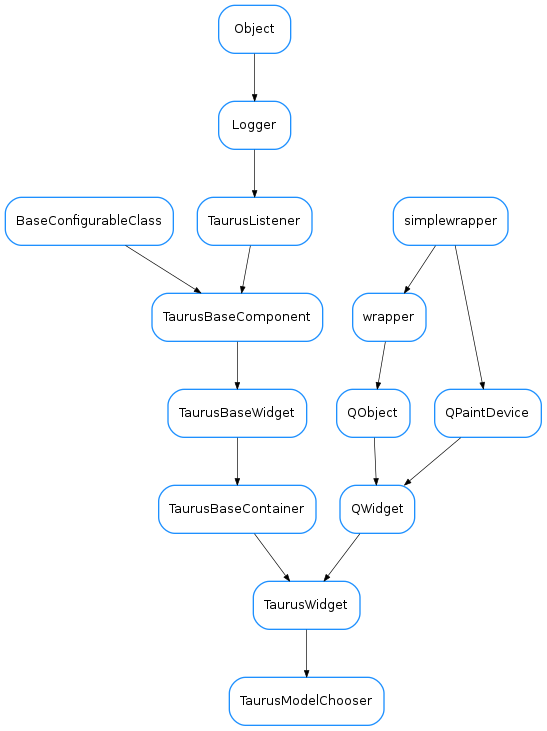

TaurusModelChooser¶

-
class
TaurusModelChooser(parent=None, selectables=None, host=None, designMode=None, singleModel=False)[source]¶ Bases:
taurus.qt.qtgui.container.tauruswidget.TaurusWidgetA widget that allows the user to select a list of models from a tree representing devices and attributes from a Tango server.
The user selects models and adds them to a list. Then the user should click on the update button to notify that the selection is ready.
- signals::
- “updateModels” emitted when the user clicks on the update button. It passes a list<str> of models that have been selected.
-
UpdateAttrs¶
-
getListedModels(asMimeData=False)[source]¶ returns the list of models that have been added
Parameters: asMimeData ( bool) – If False (default), the return value will be a list of models. If True, the return value is a QMimeData containing at least TAURUS_MODEL_LIST_MIME_TYPE and text/plain MIME types. If only one model was selected, the mime data also contains a TAURUS_MODEL_MIME_TYPE.Return type: list<str> orQMimeDataReturns: the type of return depends on the value of asMimeData
-
isSingleModelMode()[source]¶ returns True if the selection is limited to just one model. Returns False otherwise.
Return type: boolReturns:
-
static
modelChooserDlg(parent=None, selectables=None, host=None, asMimeData=False, singleModel=False, windowTitle='Model Chooser')[source]¶ Static method that launches a modal dialog containing a TaurusModelChooser
Parameters: - parent (
QObject) – parent for the dialog - selectables (
list<TaurusElementType>) – if passed, only elements of the tree whose type is in the list will be selectable. - host (
QObject) – Tango host to be explored by the chooser - asMimeData (
bool) – If False (default), a list of models will be. returned. If True, a QMimeData object will be returned instead. SeegetListedModels()for a detailed description of this QMimeData object. - singleModel (
bool) – If True, the selection will be of just one model. Otherwise (default) a list of models can be selected - windowTitle (
str) – Title of the dialog (default=”Model Chooser”)
Return type: list,boolorQMimeData,boolReturns: Returns a models,ok tuple. models can be either a list of models or a QMimeData object, depending on asMimeData. ok is True if the dialog was accepted (by clicking on the “update” button) and False otherwise
- parent (
-
setSingleModelMode(single)[source]¶ sets whether the selection should be limited to just one model (single=True) or not (single=False)
-
singleModelMode¶ returns True if the selection is limited to just one model. Returns False otherwise.
Return type: boolReturns:
-
updateList(attrList)[source]¶ for backwards compatibility with AttributeChooser only. Use
setListedModels()instead
-
updateModels¶